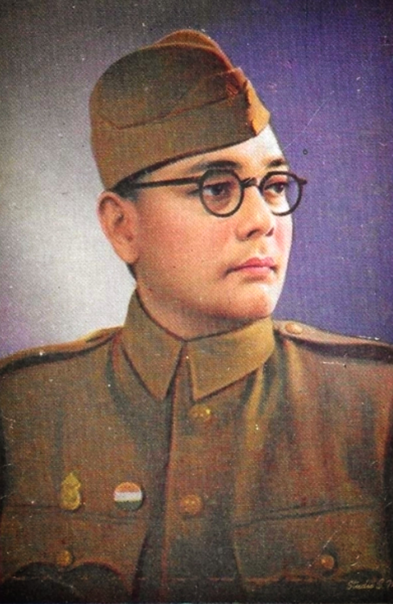

Subhash Chandra Bose- An Unsung Hero
Netaji Subhash Chandra Bose
23rd of January 1897- August 18, 1945
About
Netaji, as he is fondly called, was a man of extraordinary courage and conviction. He was an ardent nationalist who dedicated his life to the cause of Indian independence from British rule. He is widely recognized for his leadership skills, his speeches and his military strategies that motivated millions of Indians to join the freedom movement. The INA was a revolutionary army which was founded by Mohan Singh, consisted of Indian soldiers who had defected from the British Indian Army and were committed to the cause of Indian independence. It was later renamed as Azad Hind Fauj by Subhash Chandra Bose. The INA's efforts, along with those of other freedom fighters, played a crucial role in weakening the British hold on India and ultimately leading to India's independence in 1947. Bose's legacy lives on in the hearts of millions of Indians and serves as a constant source of inspiration for those who strive for freedom and justice. The Parakram Divas is a reminder of the sacrifices made by Bose and other freedom fighters and encourages us to continue working towards a better and more just society.
Education
All total Janakinath Bose and Prabhavati Dutt were parents to 14 kids and Subhas Chandra Bose was the
9th one. He was the student of Protestant European School of Cuttack. He was a meticulous student and
with
his hard work he was able to get second position in the matriculation exam. Later on, He went to
Presidency
College (now University) in Calcutta. at that time, Teachings and philosophies of Swami Vivekananda and
Shri
Ramakrishna Paramhansa Dev influenced him a lot as he used to read their works with great interest.
He was expelled from the college on the basis of some false allegations which ignited a strong sense of
rebellion in him and the mistreatment of Indians at the hands of the British which he observed to be
happening widespread in Calcutta only added fuel to the fire. After which he took admission in Scottish
Church College under the University of Calcutta and from there he had his graduation degree in
Philosophy in
1918. Then He prepared for the Indian Civil Services exam after going to London with his brother Satish
and
with his immense power of knowledge, he cracked the exam in his very first attempt. Still he was not so
happy as he knew he would now have to work under the British government. But after the infamous incident
of
the infamous Jallianwala Bagh massacre, He was sure that he won’t serve the English anymore and to give
it
an end, he finally resigned in 1921 from the Indian Civil Services to show anger and resistance to the
British Government.
Role in Freedom Struggle
Subhas Chandra Bose joined the Indian National Congress (INC) under the influence of Mahatma
Gandhi and
started the newspapers called “Swaraj” which means self-governance which marks his entry into politics
and his role in the freedom struggle in India has just started. Chittaranjan Das was his mentor. In the
year 1923, he became the President of the All India Youth Congress and became the editor of the
newspaper “Forward” started by C.R. Das himself. He had also been elected as the mayor of Calcutta back
then. He gained leadership spirit and made his way up to the top in the INC very soon. In 1928, the
Motilal Nehru Committee demanded Dominion Status in India but Subhash Chandra Bose along with Jawaharlal
Nehru asserted that nothing would satisfy other than complete independence of India from the British.
Gandhiji strongly opposed the ways of Bose, who wanted independence by hook or by crook, as he was a
firm believer of non-violence itself.
He was sent to jail in 1930 during the Civil Disobedience movement but was related along with
other
prominent leaders in the year 1931 when the Gandhi-Irwin pact was signed. In 1938, he was elected as
President at the Haripura session of the INC and re-elected at the Tripuri Session in 1939 by competing
against Dr P. Sitaramayya who was supported by Gandhi himself. He maintained strict standards during the
commencement of the first World War and demanded full independence of India from the British within six
months. He faced vehement objections from inside the Congress which led him to resign from INC and form
a more progressive group called the “Forward Bloc”.
He started a mass movement against using Indian men in the wars of foreign countries which
received
immense support and voice which led him to be put under house arrest in Calcutta but he left the house
in disguise in January 1941 and reached Germany via Afghanistan and met the Nazi leader there to seek
help from them to drive the British away from India. He also sought help from Japan. He made full use of
the philosophy “an enemy's enemy is a friend”.
Legacy
In many ways, Netaji Subhas Chandra Bose is the architect of modern India, who was far ahead of his times and contemporariesWith alternative narratives to history forcefully making inroads into public consciousness, the long-overdue recognition is now finally coming to him.To commemorate his 125th birth anniversary and as part of the year-long celebrations, the Central government has announced that a grand statue of Bose will be installed under the canopy at India Gate. Until the installation of the actual statue is completed, a hologram of Bose will be projected at the site of the statue. The Centre has also instituted “Subhas Chandra Bose Aapda Prabandhan Puraskars” to recognize and honour the invaluable contribution and selfless service rendered by individuals and organisations in India in the field of disaster management which will be presented during the investiture ceremony. The West Bengal Government has also set up a committee to conduct year-long celebrations till January 23, 2022” and promised a monument to be erected in Kolkata and a state university to be set up in the name of Azad Hind Fauj.